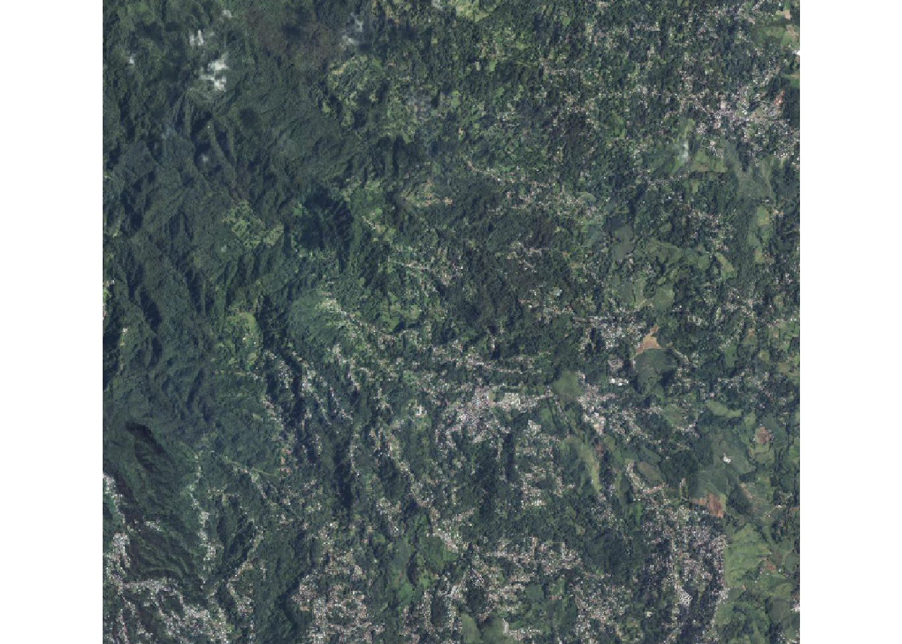
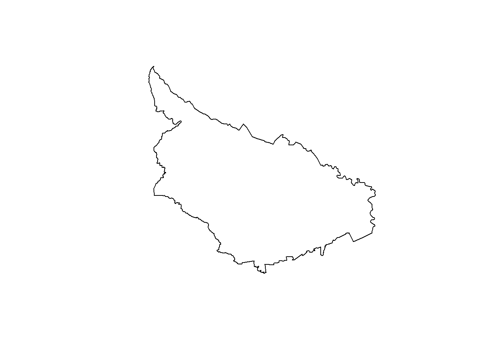
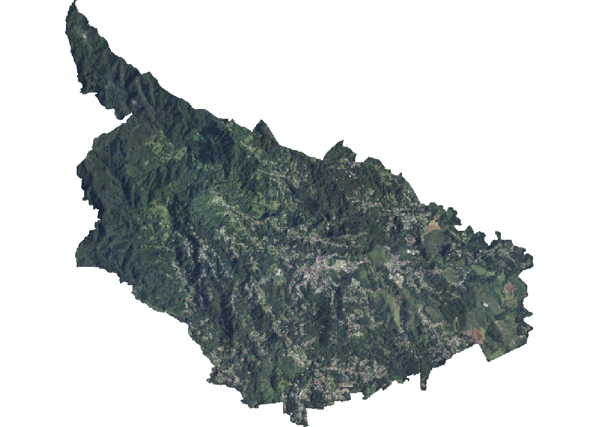
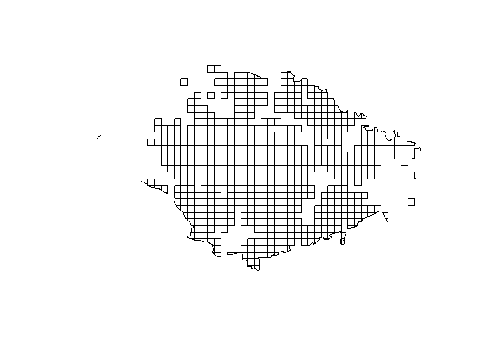
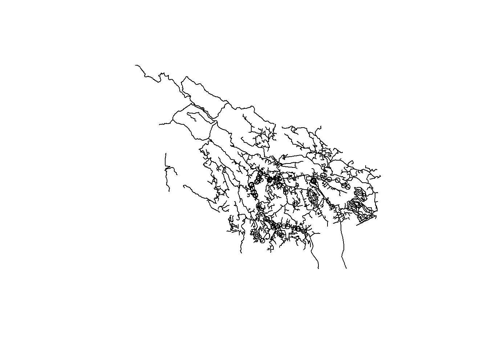

Script5
#permet de gérer les gpkg
library(sf)## Warning: le package 'sf' a été compilé avec la version R 4.5.3## Linking to GEOS 3.14.1, GDAL 3.12.1, PROJ 9.7.1; sf_use_s2() is TRUE#permet de faire des maps
library(mapsf)## Warning: le package 'mapsf' a été compilé avec la version R 4.5.3library(happign)## Warning: le package 'happign' a été compilé avec la version R 4.5.3## Please make sure you have an internet connection.## Use happign::get_last_news() to display latest geoservice news.##
## Attachement du package : 'happign'## L'objet suivant est masqué depuis 'package:base':
##
## withinlibrary(terra)## Warning: le package 'terra' a été compilé avec la version R 4.5.3## terra 1.9.11##
## Attachement du package : 'terra'## L'objet suivant est masqué depuis 'package:happign':
##
## relatetot <- get_apicarto_cadastre("97224", type = "commune")
st_write(tot, "projet.gpkg", "commune", delete_layer = T)## Deleting layer `commune' using driver `GPKG'
## Writing layer `commune' to data source `projet.gpkg' using driver `GPKG'
## Writing 1 features with 5 fields and geometry type Multi Polygon.r <- get_wms_raster(tot,
layer = "ORTHOIMAGERY.ORTHOPHOTOS",
res = 10,
crs = 5490,
rgb = TRUE,
filename = "SaintJoseph.tif",
overwrite = FALSE,
verbose = TRUE)## Using cached file: C:\Users\I J\Documents\Iudig\Licence\L3S6\SIG\iudig.github.io\SaintJoseph.tifr <- rast("SaintJoseph.tif")
plot(r)
car3 <- st_read("contour.geojson")## Reading layer `contour' from data source
## `C:\Users\I J\Documents\Iudig\Licence\L3S6\SIG\iudig.github.io\contour.geojson'
## using driver `GeoJSON'
## Simple feature collection with 2 features and 20 fields
## Geometry type: GEOMETRY
## Dimension: XY
## Bounding box: xmin: -61.0868 ymin: 14.6421 xmax: -60.99431 ymax: 14.7251
## Geodetic CRS: WGS 84car3 <- car3[1,]
car3 <- st_transform(car3, 5490)
plot(car3$geometry)
cr <- crop(r, car3, mask = T)
plot(cr)
st_layers("base.gpkg")## Driver: GPKG
## Available layers:
## layer_name geometry_type features fields crs_name
## 1 batourq Multi Polygon 42 2 RGF93 v1 / Lambert-93
## 2 carreau_manquant 42 2 RGF93 v1 / Lambert-93
## 3 carreau_manquant97 Polygon 115 2 RGAF09 / UTM zone 20N
## 4 commune Polygon 43 3 RGF93 v1 / Lambert-93
## 5 car Multi Polygon 43259 38 RGF93 v1 / Lambert-93
## 6 car97 Multi Polygon 1383 37 RGAF09 / UTM zone 20Ncar2 <- st_read("base.gpkg", "car97", quiet=T)
carST2 <- car2 [car2$code == 97224,]
plot(carST2$geom)
cr <- crop(r, carST2, mask = T)
plot(cr)
st_layers("routes.geojson")## Driver: GeoJSON
## Available layers:
## layer_name geometry_type features fields crs_name
## 1 routes 1083 35 WGS 84routes <- st_read("routes.geojson")## Reading layer `routes' from data source
## `C:\Users\I J\Documents\Iudig\Licence\L3S6\SIG\iudig.github.io\routes.geojson'
## using driver `GeoJSON'
## Simple feature collection with 1083 features and 35 fields
## Geometry type: GEOMETRY
## Dimension: XY
## Bounding box: xmin: -61.09734 ymin: 14.63608 xmax: -60.99492 ymax: 14.71848
## Geodetic CRS: WGS 84routes <- routes[,1]
plot(routes$geometry)